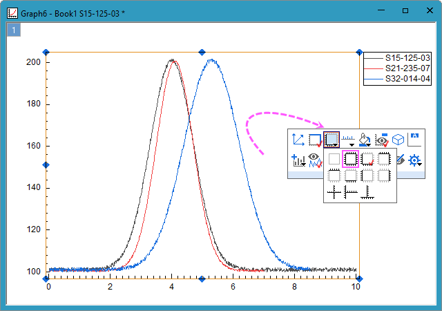
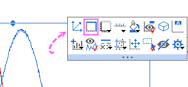

FAQ-114 グラフで上と右の軸を表示するには?
最終更新日：2026/5/6
Display-Top-Right-Axis
現在のグラフで上と右に軸を表示する
直交座標系の2Dグラフレイヤは、4つの軸（左Y、下X、右Y、上X）から構成されます。 デフォルトでは下と左の軸のみが表示されます。ここでは、右と上の軸を表示する方法を紹介します。
- グラフレイヤをクリックし、ポップアップするミニツールバーの軸の配置ボタンをクリックして、すべての軸項目を選択します。

- グラフレイヤをクリックし、ポップアップしたミニツールバーのボタンレイヤー枠
 をクリックするか、表示：表示様式：レイヤ枠を選択してレイヤフレームを表示させます。デフォルトでは、レイヤ枠はグラフ軸の線幅と色に合わせて表示されます。
をクリックするか、表示：表示様式：レイヤ枠を選択してレイヤフレームを表示させます。デフォルトでは、レイヤ枠はグラフ軸の線幅と色に合わせて表示されます。

- 環境設定：テーマオーガナイザを選択します。グラフタブで、All Axes Onを選択し、今すぐ適用をクリックすると全ての軸が有効になります。上軸と右軸にも目盛りが表示されます。
- テーマオーガナイザには、Opposite Linesテーマもあり、目盛りなしで上と右の線を表示します。
- 任意の軸線をダブルクリックします。軸と軸目盛タブを選択します。左側のパネルで上軸と右軸を選択し、軸と軸目盛を表示にチェックを入れます。
- 任意の軸線をダブルクリックします。グリッド線タブを選択します。左側のパネルで垂直方向と水平方向を選択し、反対にチェックを入れます。
今後作成するグラフで上と右に軸を表示する
- Origin 2017より、組み込みグラフテーマAll Axes Onが追加されました。環境設定：テーマオーガナイザを選択します。 グラフタブにてAll Axe onを右クリックし、コンテキストメニューからシステムテーマに設定を選択します。
 | Ctrlキーを押したまま複数のテーマを選択し、右クリックして合併するを選択することもできます。これにより、選択したテーマを組み合わせて、新しいテーマを作成します。そのテーマに適切な名前を付けてから右クリックし、そのテーマをシステムテーマとして設定することができます。
|
- 古いバージョンのOriginには、Opposite Linesという組み込みテーマがありました。これをシステムテーマに設定できます。上軸と右軸には目盛がありません。
| または、上軸と右軸を有効にしたグラフテーマを作成して、システムテーマとして設定することもできます。例：単純なグラフをプロットします。はじめに上軸と右軸を設定します。次に、レイヤ内でクリックしてレイヤ枠を選択します。右クリックし、「フォーマットをテーマとして保存」を選択します。テーマ・オーガナイザにて、そのテーマをシステムテーマに設定します。テーマには、上軸と右軸の表示に関係のない多くのレイヤプロパティが保存されています。テーマを編集するのは難しい場合もあるので、すべてのケースで機能するとは限りません。
|
キーワード：反対、レイヤ、目盛、タイトル、フレーム
必要なOriginのバージョン: Origin 2015 SR0以降